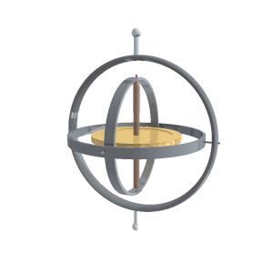

Everything later — \( (A,B) \), LQR's \(K\), the Kalman belief, the MPC prediction — is a function of this vector.
Wk-13 preview: give a learning agent position without velocity and identical-looking states demand different actions — the Markov property dies. Today's argument, in probabilistic clothes.
The idea behind the whole week
State space: turning physics into \( \dot{\mathbf x} = f(\mathbf x, \mathbf u) \)
The 12 numbers, grouped by what they mean. Left half is where you are; right half is how you are pointing. The amber arc is the only coupling — and it runs one way.
A state-space model answers one question: given where I am now and what I do now, where am I an instant later?
Physics gives second-order laws (\( F = ma \)). Stacking position and velocity turns them into first-order — the form every controller, estimator and simulator wants.
\( \mathbf u = (T, \tau_x, \tau_y, \tau_z) \): four inputs against twelve states. Underactuated, and that word will shape every design decision from Week 5 on.
Why first-order matters.
RK4 integrates first-order systems. Linearisation produces \( (A,B) \) from first-order systems. Kalman filters propagate first-order systems. MPC discretises first-order systems. One normal form, five downstream tools — this is the highest-leverage bookkeeping in engineering.
Prerequisite, made explicit
The cross product, and the hat operator
The cross product appears twice this week — in the transport theorem and in Euler's equation. Written as a matrix it becomes ordinary linear algebra:
Spinning about z carries the x-axis towards y — which is exactly what a yawing quadrotor does to its own nose.
Two roads to the same equations
Newton–Euler vs Lagrange
Newton–Euler (our road)
Lagrange
Starts from
forces and torques on a free body
kinetic minus potential energy
Bookkeeping
vectors, frames, cross products
generalised coordinates, partial derivatives
Gives you
every internal force explicitly
equations of motion, constraints eliminated
Best when
few bodies, forces are the point
many links, complicated constraints
For a quadrotor
direct: thrust and drag ARE the inputs
elegant but hides the actuators
Both give an identical \( f(\mathbf x,\mathbf u) \). We take Newton–Euler because our control inputs are forces and torques — no translation layer between physics and actuator.
When you will meet the other road.
Robot manipulators (many joints, many constraints) are Lagrange territory; if you go on to arms or legged robots, expect the same physics arriving in different clothes.
Learning objectives
By the end of today you can…
Write the Newton–Euler 6-DOF model: translation in the world frame, rotation in the body frame.
Lay out the 12-state vector: position(3), velocity(3), ZYX Euler(3), body rates(3).
Use the Euler kinematics \( \dot{\boldsymbol\eta} = W(\phi,\theta)\,\boldsymbol\omega \).
State the Euler equation \( \mathbf{I}\dot{\boldsymbol\omega} = \boldsymbol\tau - \boldsymbol\omega\times\mathbf{I}\boldsymbol\omega \).
Lab Re-implement state_derivative and match the reference to \(<10^{-9}\).
If you lift an equation from a NED source, flip the z-sign.
Mental picture first
Two forces. That's the whole inventory.
Gravity at the CoM (attitude-blind), total thrust along body-z (attitude-slaved), and thrust differences as torques.
Hold this picture while we derive: every term that appears on the next slides must point at something in this drawing — if it doesn't, we made an algebra mistake.
Derivation · click to advance interactive
Newton, one honest step at a time
1\( m\,\dot{\mathbf v} = \sum \mathbf F \)Newton, world frame. Sum every real force on the airframe. There are only two.
2\( \sum \mathbf F = \mathbf F_g + \mathbf F_T \), with \( \mathbf F_g = -mg\,\mathbf e_3 \)Gravity is easy: world-down, always, attitude-independent.
3\( \mathbf F_T^{body} = T\,\mathbf e_3 \)Thrust is easy too — in the wrong frame. Rotors only push along body-z.
4\( \mathbf F_T^{world} = R(\boldsymbol\eta)\, T\mathbf e_3 \)The key move: Wk-1's R carries it into the world. This one multiplication is where attitude steers position — the whole premise of Wk 6.
5\( \dot{\mathbf v} = -g\mathbf e_3 + \tfrac{1}{m} R\, T\mathbf e_3 \)Divide by m, done. Three lines of NumPy in dynamics.py — and you just derived them.
Your turn (90 s) — set \( \phi=\theta=0 \) and write \( \dot{\mathbf v} \) by hand. Then tilt to \( \theta \): which world component appears first, and with what sign? Check against slide 4's small-angle result next week.
Newton · world frame
Translational dynamics
Position just integrates velocity, \( \dot{\mathbf{p}}=\mathbf{v} \). Newton's law gives the acceleration:
gravity pulls down, thrust acts along +body-\(z\) and is rotated into the world by \(R\):
This is exactly quadsim.dynamics:
accel = np.array([0,0,-g]) + (R @ np.array([0,0,T])) / m
At hover, level: \(R=I\) ⇒ \(\dot{\mathbf v}=(0,0,T/m-g)\), so \(T=mg\) cancels gravity.
A question worth two minutes
Is the ground an inertial frame?
Newton's laws hold in an inertial (non-accelerating, non-rotating) frame. The Earth rotates once per day — so strictly, no.
Coriolis acceleration \( 2\boldsymbol\Omega_E \times \mathbf v \) with \( \Omega_E = 7.3\times10^{-5} \) rad/s. At \( v = 5 \) m/s: \( \approx 7\times10^{-4} \) m/s².
Compare to what our controller fights: gusts at \( \sim 1 \) m/s², thrust changes at \( \sim 5 \) m/s². Coriolis is three orders of magnitude below the noise floor.
So the answer is: yes, for us.
We call the room inertial and move on — but we do it knowingly, with a number. That habit is the difference between an approximation and a hope.
When it stops being true: long-range aircraft (Coriolis biases the trajectory), inertial navigation over minutes (the error integrates twice), and anything orbital. If you go into INS work, this term comes back with interest.
Where the difficulty actually is
Which terms are nonlinear — a catalogue
Term
Nonlinear in
Severity near hover
Who has to care
\( R(\boldsymbol\eta)\,T\mathbf e_3 \)
products of \( \sin,\cos \) of angles and \( T \)
mild (1% at 15°)
everyone — this is the tilt map
\( \boldsymbol\omega \times \mathbf I \boldsymbol\omega \)
quadratic in \( \boldsymbol\omega \)
negligible (0.15%)
aerobatic flight, mission M2
\( W(\boldsymbol\eta) \)
\( \tan\theta \), \( 1/\cos\theta \)
mild, then catastrophic
anyone near 90° pitch
\( f_i = k_f\Omega_i^2 \)
quadratic in rotor speed
hidden — we command \( f \) directly
firmware, motor calibration
actuator limits \( 0 \le f_i \le f_{max} \)
not smooth at all
whenever you saturate
everyone, Weeks 3 and 11
Note the last row. Saturation is not a mild nonlinearity you can Taylor-expand away — it is a hard corner. That is why clamping an LQR is unsatisfying and why MPC exists.
The strategy of the whole course.
Linearise the mild ones (Weeks 4–7), respect the hard one explicitly (Weeks 11–12), and learn the residue from data when modelling gives out (Weeks 13–14). Three responses to nonlinearity, in escalating order of cost.
Solving \( f(\mathbf x, \mathbf u) = \mathbf 0 \)
Equilibrium: what 'hover' means algebraically
1require \( \dot{\mathbf x} = \mathbf 0 \) for all twelve componentsDefinition of equilibrium: nothing changes. Twelve equations; we solve for the state and input that satisfy them.
2\( \dot{\mathbf p} = \mathbf v = \mathbf 0 \), \( \dot{\boldsymbol\eta} = W\boldsymbol\omega = \mathbf 0 \Rightarrow \boldsymbol\omega = \mathbf 0 \)Six equations spent immediately. Not moving, not rotating. \( W \) is invertible near hover, so \( \boldsymbol\omega = 0 \) follows.
3\( \mathbf I \dot{\boldsymbol\omega} = \boldsymbol\tau - \boldsymbol\omega\times\mathbf I\boldsymbol\omega = \mathbf 0 \Rightarrow \boldsymbol\tau = \mathbf 0 \)Three more. With \( \boldsymbol\omega = 0 \) the gyroscopic term vanishes, so equilibrium needs zero torque.
4\( -g\mathbf e_3 + \tfrac{1}{m}R\,T\mathbf e_3 = \mathbf 0 \)The last three. Thrust must exactly cancel gravity — as a vector, which constrains direction as well as magnitude.
5\( \phi = \theta = 0 \), \( \psi \) free, \( T = mg = 6.38 \) NSolve. Level attitude is forced (thrust must point up), yaw is free (a hovering quad may face anywhere), and thrust is pinned. The trim point every later design linearises about.
A whole family, not a point.
\( \psi \) free and \( (x,y,z) \) free means hover is a 4-parameter family of equilibria, not one point. That is why position and yaw need outer loops to pick a member of the family, while attitude and altitude need inner loops to stay on it.
Per motor.
\( T = mg = 0.65 \times 9.81 = 6.38 \) N over four motors \( \Rightarrow 1.59 \) N each, against \( f_{max} = 4 \) N. Thrust-to-weight ratio \( = 16/6.38 \approx 2.5 \) — the number that decides how aggressively you can ever fly.
Detail, done properly
Centre of mass — why gravity gets no vote on rotation
Definition.
\( \mathbf r_{cm} = \frac{1}{m}\int \mathbf r \, dm \). Take moments about it and gravity contributes zero net torque, because \( \int (\mathbf r - \mathbf r_{cm}) \times \mathbf g \, dm = \mathbf 0 \).
And when it moves.
Clip a 20 g payload 3 cm off-centre on a 420 g aircraft: the CoM shifts by \( 20 \times 3 / 440 \approx 0.14 \) cm, and the thrust line now sits 1.4 mm off the CoM. Torque \( = 4.1\,\text{N} \times 0.0014\,\text{m} \approx 0.006 \) N·m — small, constant, and exactly the kind of bias an integrator exists to erase (Week 5, fix #6).
So: gravity acts at the CoM ⇒ no righting moment ⇒ a quadrotor has no passive stability whatsoever. The picture in Week 1 was not rhetorical.
(2 min) — Your team aircraft with the battery mounted 1 cm rearward: estimate the constant pitch torque. Is it inside your motors' trim authority? (It will be — but knowing the number is why your aircraft trims cleanly instead of mysteriously.)
Detail, done properly
Momentum, angular momentum, and what a torque changes
Linear: \( \mathbf p = m\mathbf v \), and \( \dot{\mathbf p} = \sum \mathbf F \). Mass is a scalar — push and it goes that way.
Angular: \( \mathbf L = \mathbf I \boldsymbol\omega \), and \( \dot{\mathbf L} = \sum \boldsymbol\tau \). Inertia is a tensor — so \( \mathbf L \) need not point along \( \boldsymbol\omega \).
That single asymmetry is the entire reason rotational dynamics feels strange, and why the gyroscope in the next photo behaves as it does.
See the asymmetry.
With \( \mathbf I = \mathrm{diag}(2.3, 2.3, 4.0)\times10^{-3} \) and \( \boldsymbol\omega = (1,0,1) \) rad/s: \( \mathbf L = (2.3, 0, 4.0)\times10^{-3} \).
\( \boldsymbol\omega \) points 45° between x and z; \( \mathbf L \) points 60°. They disagree — and the disagreement is precisely what \( \boldsymbol\omega \times \mathbf I \boldsymbol\omega \) accounts for.
Near hover \(\phi,\theta\approx0\Rightarrow W\approx I\), so \( \dot{\boldsymbol\eta}\approx\boldsymbol\omega \).
Gimbal lock: \(W\) blows up at \(\theta=\pm90°\) (the \(1/\cos\theta\)). The motivation for quaternions.
The bridge, drawn
Three different rate-like objects
Gyro rates, Euler rates, and angles are three distinct things. W is the map between the first two — and it is the one that can blow up.
(90 s) — Before the derivation: your quad is pitched 60° nose-up and yawing. Does the gyro's \( r \) reading equal \( \dot\psi \)? (No — at 60° pitch the body's z-axis is 60° away from world-z, so a world-frame yaw shows up spread across q and r. This is exactly what W untangles.)
Block B · interactive
η̇ = W(η)·ω — the matrix, the rates, and 1/cosθ
Predict before you compute. Hold r = 1 rad/s. Before you move θ: at what pitch does ψ̇ reach 2 rad/s? Check, then push to 85° and say what has actually gone wrong — the aircraft, or the coordinates?
Building \( W(\boldsymbol\eta) \) from three partial turns
1\( \boldsymbol\omega = \dot\phi\,\mathbf e_x'' + \dot\theta\,\mathbf e_y' + \dot\psi\,\mathbf e_z \)Each Euler rate spins about a different axis. Roll about the twice-rotated x, pitch about the once-rotated y, yaw about the original z — that is what 'intrinsic' means, written as vectors.
2express all three in body coordinatesThe gyro lives in the body frame, so every contribution must be resolved there. \( \mathbf e_x'' \) is already body-x; the other two need rotating back through \( R_x(\phi) \) and \( R_x(\phi)R_y(\theta) \).
3\( \boldsymbol\omega = \begin{bmatrix} 1 & 0 & -s_\theta \\ 0 & c_\phi & c_\theta s_\phi \\ 0 & -s_\phi & c_\theta c_\phi \end{bmatrix} \begin{bmatrix} \dot\phi \\ \dot\theta \\ \dot\psi \end{bmatrix} \)Collect the columns. Note this is the map in the easy direction: Euler rates → body rates. No divisions anywhere, so nothing can blow up here.
4invert it: \( \dot{\boldsymbol\eta} = W(\boldsymbol\eta)\,\boldsymbol\omega \)But we measure \( \boldsymbol\omega \) and want \( \dot{\boldsymbol\eta} \), so we need the inverse — and inverting introduces \( 1/\det \). The determinant is \( \cos\theta \).
5\( W = \begin{bmatrix} 1 & s_\phi t_\theta & c_\phi t_\theta \\ 0 & c_\phi & -s_\phi \\ 0 & s_\phi/c_\theta & c_\phi/c_\theta \end{bmatrix} \)There is the singularity, and now you know its provenance: not a physical failure, but a matrix inverse losing rank at \( \theta = \pm 90^\circ \). The aircraft is fine; the chart is not.
Read the consequences
What \( W \) costs you, in three regimes
Regime
\( W \) behaves
Engineering consequence
Near hover, \( |\theta| < 15^\circ \)
\( W \approx I \), error < 4%
you may treat \( \dot{\boldsymbol\eta} \approx \boldsymbol\omega \) — most of our controllers do
Aggressive, \( |\theta| \sim 45^\circ \)
off-diagonal terms real
ignoring \( W \) mistunes the loop; racing controllers do not ignore it
\( |\theta| \to 90^\circ \)
\( 1/\cos\theta \to \infty \)
Euler-based code produces garbage; quaternion or matrix code is untroubled
The number.
At \( \theta = 89^\circ \), \( 1/\cos\theta = 57 \). A benign gyro reading of \( q = 0.1 \) rad/s becomes a claimed \( \dot\psi \) of \( 5.7 \) rad/s — 327°/s of yaw rate that is not happening. Integrate that for one time step and the attitude estimate is destroyed.
What real autopilots do.
Store attitude as a quaternion or matrix (no singularity), integrate with \( \dot R = R\widehat{\boldsymbol\omega} \) from Week 1, and convert to Euler angles only for display and for gentle-flight control laws. quadsim uses Euler angles deliberately — they are transparent for teaching, and we stay inside the safe regime all term.
Mental picture first
Why rotation refuses to be intuitive

A spinning gyroscope precessing under gravity: push it one way, it moves another. Angular momentum, not mass, decides the response. Wikimedia Commons, public domain.
Linear motion: push → accelerate along the push. Rotation: torque → the spin axis itself migrates. The culprit is the \( \boldsymbol\omega \times \mathbf I \boldsymbol\omega \) term you are about to meet.
A quad near hover spins slowly (small \( \boldsymbol\omega \)), so this drama is muted — that smallness is a design gift Wk 5 will exploit.
But in aggressive flight (racing, flips) the term wakes up — and fixed-gain controllers tuned at hover start missing. File that for Week 11's requirements-review example, M2.
Euler · body frame
Rotational dynamics (Euler's equation)
Angular momentum in the body frame. With diagonal inertia \(\mathbf{I}\) and body torque \(\boldsymbol\tau\):
Verbatim from quadsim.dynamics:
omega_dot = I_inv @ (tau - np.cross(omega, I @ omega))
The \(\boldsymbol\omega\times\mathbf{I}\boldsymbol\omega\) term is the gyroscopic / Coriolis coupling — small near hover, but it's real and the lab will catch you if you drop it.
Block B · interactive
Euler's equation, live — ω × Iω with no torque at all
Predict before you compute. Set I₁ = I₂ and spin about y: which components change over 6 s? Then make I₁ ≠ I₂ — write down which axis you expect to go unstable before you drag.
The inertia tensor — and how your team will measure one
Definition.
\( \mathbf I = \int_{\text{body}} \big( \lVert \mathbf r \rVert^2 I_{3} - \mathbf r \mathbf r^\top \big)\, dm \) — the rotational analogue of mass: how hard each axis is to spin. Symmetric ⇒ diagonalisable; in principal axes it is \( \mathrm{diag}(I_{xx}, I_{yy}, I_{zz}) \). A symmetric X-quad's principal axes ≈ its body axes, which is why quadsim carries just three numbers: \( (2.3,\ 2.3,\ 4.0)\times 10^{-3}\ \mathrm{kg\,m^2} \).
Worked example (bifilar pendulum — the team measurement).
Hang the aircraft from two parallel strings (length \(L\), separation \(2d\)), twist a few degrees, time the oscillation \(T_{osc}\):
\[ I_{zz} = \frac{m g d^2\, T_{osc}^2}{4\pi^2 L} \]
With \( m=0.42 \) kg, \( d=0.10 \) m, \( L=0.60 \) m and a measured \( T_{osc}=1.42 \) s: \( I_{zz} \approx \frac{0.42\cdot 9.81\cdot 0.01\cdot 2.02}{4\pi^2\cdot 0.60} \approx 3.5\times10^{-3}\,\mathrm{kg\,m^2} \). Ten minutes with string and a stopwatch — Role 1's Wk-5 milestone.
Worked example (may we drop the gyroscopic term?).
Hover disturbance: \( \lVert\boldsymbol\omega\rVert = 0.5 \) rad/s ⇒ \( \lVert \boldsymbol\omega\times \mathbf I\boldsymbol\omega \rVert \lesssim I\,\omega^2 \approx 2.3\times10^{-3}\cdot 0.25 \approx 6\times10^{-4} \) N·m.
Available roll torque (Wk 3): \( \sim 0.4 \) N·m — the term is 0.15% of authority. At a flip's \( \omega=8 \) rad/s it is ~37% and can no longer be ignored. "Negligible" is a number, not a mood.
Concept check · 00:50
Predict before you compute
Q1 — In \( \mathbf{I}\dot{\boldsymbol\omega} = \boldsymbol\tau - \boldsymbol\omega\times \mathbf{I}\boldsymbol\omega \), set \( \boldsymbol\tau = 0 \) with \( \boldsymbol\omega \ne 0 \). Does the quad keep spinning at constant \( \boldsymbol\omega \)?
Only about a principal axis.The gyroscopic term \( \boldsymbol\omega\times \mathbf{I}\boldsymbol\omega \) vanishes only when \( \boldsymbol\omega \) aligns with a principal axis — otherwise the spin axis itself wanders (the tennis-racket theorem lives in this term). Near hover it's small, which is why Wk 5's controller gets away with ignoring it.
Q2 — Why does gravity appear in the translational equation but never in the rotational one?
Gravity acts at the centre of mass— zero moment arm about it, zero torque. The moment a payload shifts the CG off-centre, that stops being true: a constant disturbance torque appears, and your Wk-5 integrator (or trim) must eat it. Real aircraft, real effect — file it for the flight demo.
The mechanism behind the term
Transport theorem, drawn
A vector that is constant in the rotating body still changes in the world — by exactly ω × L. That is the fee for using the frame where I is constant.
Every rotating-frame equation you will meet — Coriolis in meteorology, centrifugal terms in robotics, the gyroscopic term here — is this one identity in different costumes.
Detail, done properly
Where the numbers in \( \mathbf I \) come from
Point-mass estimate (do this on paper).
Model the quad as four motors of mass \( m_r \) at radius \( l \) on the arms, plus a central body. For the X-frame, each motor sits at \( (\pm l/\sqrt2, \pm l/\sqrt 2) \): \[ I_{xx} \approx 4 m_r (l/\sqrt2)^2 = 2 m_r l^2, \qquad I_{zz} \approx 4 m_r l^2 \]
With \( m_r = 0.02 \) kg and \( l = 0.17 \) m: \( I_{xx} \approx 1.2\times10^{-3} \), \( I_{zz} \approx 2.3\times10^{-3} \) kg·m². Same order as quadsim's values — the rest is the frame and battery.
Always \( I_{zz} \approx 2 I_{xx} \) for a planar X-frame: yaw inertia is roughly double roll/pitch, because every mass is at full radius from the z-axis but only \( 1/\sqrt2 \) from the x-axis.
Combined with yaw's tiny torque authority (Week 3), this is the double reason yaw is always the slowest axis on a quadrotor.
Parallel-axis theorem \( I = I_{cm} + m d^2 \) is how you add a payload's contribution — and why a payload far from centre hurts agility quadratically.
(2 min) — Your aircraft, battery moved 4 cm outboard: by how much does \( I_{zz} \) rise? (\( \Delta I = m_{bat} d^2 \); with 60 g that is \( 0.06 \times 0.0016 \approx 10^{-4} \) — about 4%. Small, but it is why competition builds obsess over mass centralisation.)
Derivation · click to advance interactive
Where \( \boldsymbol\omega\times \mathbf I \boldsymbol\omega \) actually comes from
1\( \dfrac{d\mathbf L}{dt}\Big|_{\text{world}} = \boldsymbol\tau \)Newton for rotation: torque changes angular momentum — but the law holds in the inertial frame.
2\( \mathbf L = \mathbf I\,\boldsymbol\omega \), with \( \mathbf I \) constant only in the body frameThe dilemma: the law lives in the world frame, the constant inertia lives in the body frame. We must bridge them.
3\( \dfrac{d\mathbf L}{dt}\Big|_{\text{world}} = \dfrac{d\mathbf L}{dt}\Big|_{\text{body}} + \boldsymbol\omega \times \mathbf L \)The transport theorem — differentiating in a rotating frame costs one cross-product. This single identity is the whole trick; it will reappear in every rotating-frame problem you ever meet.
4\( \mathbf I\,\dot{\boldsymbol\omega} + \boldsymbol\omega\times \mathbf I \boldsymbol\omega = \boldsymbol\tau \)Substitute and rearrange — Euler's equation. The gyroscopic term is not exotic physics; it is the bookkeeping fee for working where \( \mathbf I \) is constant.
Putting it together
The full \( \dot{\mathbf{x}}=f(\mathbf{x},\mathbf{u}) \)
x[0:3] p ──► dx[0:3] = v (world)
x[3:6] v ──► dx[3:6] = [0,0,-g] + R·[0,0,T]/m (world, Newton)
x[6:9] η ──► dx[6:9] = W(φ,θ)·ω (Euler kinematics)
x[9:12] ω ──► dx[9:12] = I⁻¹(τ - ω×Iω) (body, Euler eqn)
▲
u = [T, τx, τy, τz] ──────┘ (thrust + 3 body torques)
Four blocks, twelve numbers in, twelve out. Translation lives in the world frame; rotation in the body frame. That split is the whole trick.
Two Newton–Euler halves; the violet arrow — attitude rotating thrust — is the only road from the rotational half to the translational one.
Worked example · tie to the simulator
Sanity-check at hover
Take a level quad at rest with exactly hover thrust: \(\boldsymbol\eta=0,\ \boldsymbol\omega=0,\ \mathbf{v}=0,\ T=mg,\ \boldsymbol\tau=0\).
import numpy as np
from quadsim import QuadParams
from quadsim.dynamics import state_derivative, hover_state
p = QuadParams()
x = hover_state(position=(0, 0, 1.0)) # level, at rest
u = np.array([p.weight, 0.0, 0.0, 0.0]) # T = m*g, zero torque
dx = state_derivative(x, u, p)
print(dx) # -> all ~0 : a true equilibrium (hover trim)
Every component of \(\dot{\mathbf{x}}\) is ~0 — hover is a fixed point of \(f\). Add a torque bias (\( \tau_x=0.001 \)) and \(\dot\omega\neq0\): it starts to tip — that's why we need control (Wk 5).
Block B · interactive
The 12-state derivative, term by term — and 20 ms by hand
Predict before you compute. With T = mg and level: how many of the twelve derivatives are non-zero? Now θ = 10°: name the two that wake up and their signs, then press step ten times.
The twelve equations, in the order the code writes them
def state_derivative(x, u):
p, v = x[0:3], x[3:6] # world position, world velocity
eta, om = x[6:9], x[9:12] # ZYX Euler angles, body rates
T, tau = u[0], u[1:4] # thrust magnitude, body torques
R = rotation_matrix(*eta) # Wk 1
a = np.array([0,0,-g]) + (R @ np.array([0,0,T])) / m # eq. 1-3
ed = euler_rate_matrix(*eta[:2]) @ om # eq. 7-9 (W matrix)
od = I_inv @ (tau - np.cross(om, I @ om)) # eq.10-12 (Euler)
return np.concatenate([v, a, ed, od]) # eq. 4-6 are just v
Lines map one-to-one onto the four blocks of the state vector. If you cannot point at the line that produces \( \dot z \), you do not yet own the model.
Note what is absent: no aerodynamic drag, no motor lag, no ground effect. Each is a deliberate omission with a known cost.
Deliberate omissions, priced.Drag \( \sim 0.1 \) N at 5 m/s — matters for fast flight, negligible at hover. Motor lag 40 ms — matters for tuning (Wk 5), not for the physics. Ground effect — matters below ~0.3 m, which is exactly where your demo hovers, so we name it and fly higher.
How do you know a model is right?
Four tests, in increasing strength
Dimensions. Every term in every row must carry the same units. Free, catches a third of errors.
Equilibrium. At hover trim (\( \boldsymbol\eta = 0 \), \( \boldsymbol\omega = 0 \), \( T = mg \)) every derivative must be exactly zero. One assert.
Symmetry. Roll right by \( +\phi \) and left by \( -\phi \): accelerations must mirror. Catches sign errors that equilibrium misses.
Conservation. With zero torque and zero thrust, kinetic energy must be constant to integrator accuracy — a strong test of the gyroscopic term.
If this fails, no amount of controller tuning later will save you — you are stabilising the wrong aircraft.
Test 4, concretely.
Free rotation, \( \boldsymbol\omega_0 = (2,1,0.5) \), \( \boldsymbol\tau = 0 \). Integrate 10 s; \( \tfrac12 \boldsymbol\omega^\top \mathbf I \boldsymbol\omega \) should drift by \( < 10^{-8} \) with RK4 at 5 ms. Drop the \( \boldsymbol\omega\times\mathbf I\boldsymbol\omega \) term and watch energy walk away — the test that proves the term is real.
Worked example · by hand
Predict the aircraft's first 20 milliseconds
State: level hover at 2 m. At \( t=0 \) the controller commands \( \tau_x = +0.02 \) N·m and holds \( T = mg \). What happens?
\( \dot p = I_{xx}^{-1}\tau_x = 0.02/2.3\times10^{-3} = 8.7 \) rad/s² (gyroscopic term ≈ 0 since \( \boldsymbol\omega = 0 \)).
After 20 ms: \( p \approx 0.174 \) rad/s, \( \phi \approx \tfrac12 (8.7)(0.02)^2 = 0.0017 \) rad \( = 0.1^\circ \).
Altitude: \( \cos\phi \approx 1 \), so no measurable sink.
Read the answer.Rotation responds instantly; translation lags badly. After 20 ms the aircraft has rotated a tenth of a degree and moved essentially zero.
Run the same numbers for 200 ms: \( \phi = 10^\circ \), \( \ddot y = -1.7 \) m/s². An order of magnitude in time for two orders in effect — the timescale separation of Week 6, visible in the raw model before any controller exists.
(2 min) — Repeat for \( \tau_z = 0.02 \) N·m (yaw). Why is the angular acceleration smaller? (\( I_{zz} \) is 1.7× larger ⇒ 5.0 rad/s². Combined with yaw's weak torque authority, yaw is doubly slow.)
Worked example · numbers on \( W \)
Same gyro reading, two attitudes
Gyro reads \( \boldsymbol\omega = (0,\, 0,\, 0.5) \) rad/s — pure body-z rotation. What are the Euler rates?
Case A — level (\( \phi=\theta=0 \)).
\( W = I \), so \( \dot{\boldsymbol\eta} = (0,0,0.5) \).
Yawing at 0.5 rad/s, nothing else. Intuition confirmed.
The same physical rotation now reads as roll and yaw, both larger than the gyro's number.
Nothing about the aircraft's motion changed between the two cases — only the coordinate chart used to describe it. Body rates are the physical truth; Euler rates are a description that distorts as you leave hover.
(2 min) — Where does the extra 'rotation' come from in Case B — is the aircraft really rolling? (It is really rotating about body-z. Expressed in the Euler chart, that motion has components along both the roll and yaw chart axes because those axes are no longer orthogonal to each other in space. The chart distorts; the aircraft does not.)
What we deliberately left out
The model's edges, priced and named
Neglected effect
Physical magnitude
When it bites
Course response
Aerodynamic drag \( \sim \tfrac12 \rho C_d A v^2 \)
~0.1 N at 5 m/s (≈1.5% of thrust)
fast flight, wind
modelled as a disturbance, Wk 9
Rotor gyroscopic effect
\( \sim 10^{-4} \) N·m
fast attitude changes
ignored; below torque resolution
Blade flapping / advance ratio
changes \( k_f \) by ~5% at speed
forward flight
named, then absorbed by feedback
Ground effect
+5–15% thrust below ~1 rotor Ø
landing, low hover
fly demos above 0.8 m
Motor lag \( \tau_m \approx 40 \) ms
phase loss at the crossover
tuning aggressive gains
why hardware gains < sim gains, Wk 5
Battery sag
thrust falls ~10% over a flight
long hovers
the integrator's daily job
A model is defined as much by what it omits as by what it contains. Every row above is a real effect you will observe in Week 10 — and being able to name the mechanism is what separates a gap analysis from a shrug.
Detail, done properly
Units, magnitudes, and the sanity table
Quantity
Symbol
Our value
Feel for it
mass
\( m \)
0.65 kg
a large mango
arm
\( l \)
0.17 m
a hand span
inertia (roll)
\( I_{xx} \)
2.3×10⁻³ kg·m²
tiny — it spins easily
hover thrust
\( mg \)
6.38 N
650 g on a scale
max thrust
\( 4f_{max} \)
16 N
T/W ≈ 2.5
roll authority
\( \tau_{x,max} \)
≈0.8 N·m
≈350 rad/s² — vicious
Why keep a table like this.
Every number you compute this term should be checked against a magnitude you can feel. A controller that asks for 50 N of thrust or 200 rad/s² of yaw is not aggressive — it is wrong, and the fastest way to notice is to know what 'normal' looks like.
\( 350 \) rad/s² is \( 20{,}000 \) °/s²: from level to 30° in about 40 ms. That is the authority your Week-5 controller is handed, and why it can be tuned to be fast.
Concept check
Three questions before the lab
Q1 — You double every motor thrust simultaneously. Which of the twelve derivatives change?
Only \( \dot{\mathbf v} \) — and only its magnitude along body-z.Equal thrusts produce zero torque (the mixer rows for \( \tau \) sum to zero), so rotation is untouched. This is exactly the decoupling that makes altitude a separate loop in Week 6.
Q2 — At \( \boldsymbol\omega = (0,0,5) \) rad/s (fast yaw), is \( \boldsymbol\omega \times \mathbf I\boldsymbol\omega \) zero or not?
Zero.\( \mathbf I\boldsymbol\omega = (0,0,0.02) \) is parallel to \( \boldsymbol\omega \), and \( \mathbf a \times \mathbf a = \mathbf 0 \). Rotation about a principal axis is gyroscopically quiet — the term only wakes up on combined rotations.
Q3 — Your state_derivative passes the hover-equilibrium test but fails the mirror-symmetry test. Where would you look first?
A sign, almost certainly in \( W \) or in the \( R \) construction.Equilibrium tests only the zero point, where signs vanish. Symmetry probes the neighbourhood — which is why the four-test ladder is ordered the way it is.
Take-home set
Six problems — solutions posted Friday
Show \( \widehat{\mathbf a}^\top = -\widehat{\mathbf a} \) and use it to prove \( \mathbf a^\top(\mathbf a \times \mathbf b) = 0 \). What does that identity say physically about gyroscopic torque and rotational energy?
Derive the hover trim for an aircraft whose CoM is offset by \( d \) from the geometric centre. Show the trim now requires a non-zero \( \boldsymbol\tau \), and compute it for \( d = 5 \) mm.
Compute \( I_{xx} \) and \( I_{zz} \) for the four-point-mass model, then add a 60 g battery as a point mass at the centre. Which inertia changes, and why not the other?
At \( \phi = 30^\circ \), \( \theta = 45^\circ \), a gyro reads \( (0.2, 0.1, 0.3) \) rad/s. Compute \( \dot{\boldsymbol\eta} \). Which Euler rate is most amplified, and can you say why from the matrix structure?
Write the energy check of Test 4 as five lines of NumPy. Run it with and without the gyroscopic term and report the drift in each case.
The model neglects drag. Estimate the steady-state error in horizontal velocity this causes for a controller that assumes zero drag while flying at 4 m/s, given \( C_dA \approx 0.01 \) m².
Question 5 is the one to do first — it is a direct dry-run of the graded verification in today's lab, and the result is genuinely satisfying to watch.
Where this model goes
Every later week is a customer of today's \( f \)
Weeks 4–14 all consume the function you write today. There is no later point at which the model gets replaced — only linearised, estimated, constrained, or learned around.
Week
What it does to \( f \)
4
linearises it about hover ⇒ \( (A,B) \)
5–6
wraps feedback around it ⇒ the cascade
7
optimises against it ⇒ LQR
8
estimates its state from noisy sensors ⇒ the filter
9
drives it along a reference ⇒ trajectories
10
meets a plant that is not this model ⇒ the reality gap
11–14
certifies it, then predicts with it under constraints ⇒ MPC
Second half · hands-on
Now you build it
Open the Week 2 lab sheet → re-implement state_derivative(x, u) from scratch.
Code the four blocks: \( \dot{\mathbf p},\ \dot{\mathbf v},\ \dot{\boldsymbol\eta}=W\boldsymbol\omega,\ \dot{\boldsymbol\omega}=I^{-1}(\tau-\omega\times I\omega) \).
Verify against quadsim.dynamics.state_derivative on random states.
Checkpoint: max error \(<10^{-9}\). graded graded.
Everyoneroles confirmed on the course sheet — locked from today; team id (T1–T7) chosen once
1 · Modelingthis week's 6-DOF derivation checked against quadsim.dynamics to 1e-9 — keep the notes
2 · Inner loopthe 12-state layout memorised cold; which four states the attitude loop will see
4 · Estimationstate vector memorised cold — you will estimate all 12 of these
5 · Integrationteam repo has CI running the quadsim smoke tests on every push
Wk 3: the mixer, and the instructor's F570 on the desk for the parts tour. Bring the team roster.
Before you leave
The traps, named
The trap
The truth
"\( \boldsymbol\omega \) is just \( \dot{\boldsymbol\eta} \) in different notation."
They differ by \( W(\boldsymbol\eta) \); equal only at hover. Estimators and controllers that conflate them work on the bench and fail in motion.
"Gravity produces a torque that rights the quad."
Gravity acts at the CoM: zero moment arm, zero torque, zero self-righting. (Shift the CoM with a payload and a constant disturbance torque appears instead.)
"The \( \boldsymbol\omega\times\mathbf I\boldsymbol\omega \) term is negligible, full stop."
It is 0.15% of authority at hover and ~40% in a flip. Negligibility is conditional — state the condition.
"12 states is a modelling choice among many."
It is the minimal Markov state for rigid-body flight. Fewer breaks prediction; more adds nothing for control.
Wrap-up
What to remember
The model is Newton–Euler 6-DOF: translation in the world frame, rotation in the body frame.
State \( \mathbf{x}=[\mathbf{p},\mathbf{v},\boldsymbol\eta,\boldsymbol\omega] \); input \( \mathbf{u}=[T,\tau_x,\tau_y,\tau_z] \).